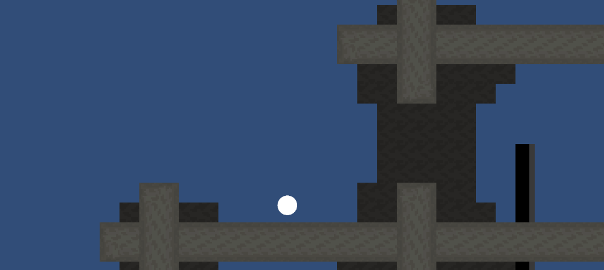
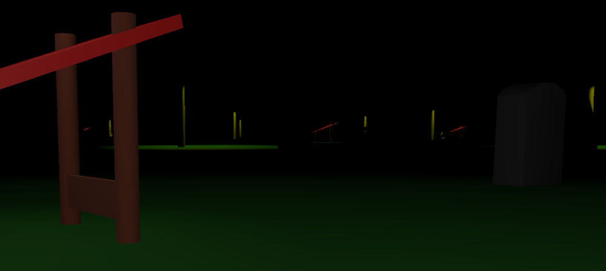
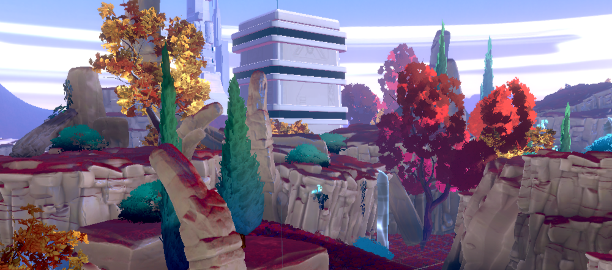

Gerben Prins

my goal with programming is being able to make a fluid platformer since plafromers have
been my favourite type of games throughout my whole life. Eventhough this game is still in
early development I've been liking a lot of challanges and tools that I used to build this game.
Click here for more information.

Mono Crow is the first Unity game I build and is still very intersting to me. Eventhough this game has many flaws
it still is a fun game to look around in. My favourite part about this game was building the "Crow" and figuring out
how I could make it fly to random direction to try and find the player. Click here for more information.

Starfall Is a project from college that I got to work on With a small team of other students for a couple of months.
This project has teached me a lot about working together in a team and how it feels to be working on a large project.
Click here for more information.